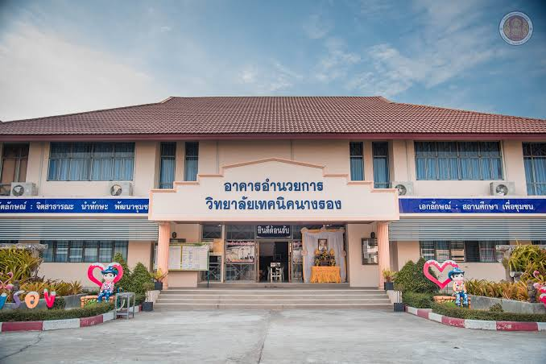

จัดการอาชีวศึกษา
ส่งเสริมการเรียนรู้ทั้งภาคทฤษฎีและภาคปฏิบัติ
วิทยาลัยเทคนิคนางรองเป็นสถานศึกษาสังกัดสำนักงานคณะกรรมการการอาชีวศึกษา ตั้งอยู่ในอำเภอนางรอง จังหวัดบุรีรัมย์ จัดการศึกษาด้านวิชาชีพเพื่อพัฒนาความรู้ ความสามารถ และทักษะของผู้เรียนให้สอดคล้องกับการประกอบอาชีพและความต้องการของสังคม
วิทยาลัยมีการจัดการเรียนการสอนและกิจกรรมพัฒนาผู้เรียน รวมถึงการให้บริการด้านการศึกษาและวิชาชีพแก่ชุมชน

assets/images/about-campus.jpgส่งเสริมการเรียนรู้ทั้งภาคทฤษฎีและภาคปฏิบัติ
เตรียมความพร้อมผู้เรียนสำหรับการทำงานและการศึกษาต่อ
สนับสนุนกิจกรรมและบริการวิชาชีพที่เป็นประโยชน์ต่อสังคม